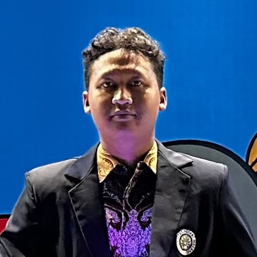

Wildan Rizky Safa Pratama
wildanrizkysafapratama@gmail.com
linkedin.com/in/wildan-rizky-safa-pratama-bb2b0541b
Portofolio: wildanrizkysafapratama.github.io/portofolio
Profil
Sarjana Teknik Elektro Universitas Negeri Malang (IPK 3,84/4,00) dengan pengalaman merancang sistem elektrik dan elektronika pada 6 proyek rekayasa — robot bawah air, drone VTOL otonom, drone kamikaze, dan robot darat. Kekuatan utama: desain PCB, arsitektur distribusi daya, integrasi sensor, dan pemilihan komponen berbasis datasheet.
Terbiasa bekerja dalam tim dengan pembagian bidang yang tegas (mekanik / elektrik / program), dan berperan sebagai penghubung antara kebutuhan sistem dan implementasi perangkat keras. Kontribusi teknis menghasilkan Juara 2 KIDN 2025 dan Best Spirit Top 8 Nasional KRTI VTOL 2026.
Target posisi: Electrical Engineer · Hardware Engineer · Systems Engineer · Project Engineer · Application Engineer
Pengalaman
Head Senior Electric & Safety Pilot
Proyek drone VTOL otonom untuk kompetisi nasional KRTI Belmawa, dengan target misi navigasi lorong sempit, pengambilan objek, dan penempatan muatan pada waypoint.
- Merancang arsitektur elektrik: distribusi daya baterai LiPo 4S 14,8 V → Power Distribution Board → 4× ESC 40 A → 4× T-Motor MN3510 700KV
- Membangun regulasi tegangan bertingkat: BEC 5 V 6 A (rail 12 V), stepdown 5 V 3 A, stepdown 3,3 V — masing-masing untuk beban berbeda
- Menyediakan daya dan integrasi fisik companion computer Jetson Orin Nano (rail 12 V) beserta jalur USB untuk LiDAR 2D RPLIDAR C1
- Mengimplementasikan GPS RTK (HERE 3+ & HERE 4 + antena Beitian) → akurasi posisi 1 cm
- Menyederhanakan sistem dibanding tahun sebelumnya: servo & LED langsung ke flight controller, 9 LED terpisah → 2 LED addressable
- Memimpin bidang elektrik tim: penentuan arsitektur sistem, standar pemilihan komponen, serta koordinasi dengan bidang mekanik dan program
- Mengoperasikan drone pada misi otonom: pre-flight check, arming, monitoring telemetri, dan pengambilalihan kendali untuk pendaratan
Electrical Engineer Intern
Perusahaan vendor otomasi dan sistem cerdas.
- Sistem monitoring kualitas air sungai untuk pengolahan limbah pabrik tahu
- Sistem kelistrikan dan sensor pada Drydome, alat pengering skala industri
- Sistem elektrik mobil otonom jarak jauh: modul GSM, kamera, deteksi objek untuk human following, kontrol jarak jauh berbasis ESP32
Head Senior Electric
- Merancang arsitektur dua papan kontrol (Master–Slave) berbasis ESP32-S3 DevKitC-10, terhubung lewat bus IDC 8-pin untuk memisahkan beban komputasi dan aktuator
- PCB Master: IMU MPU6050, 4 kanal antarmuka motor, pembacaan tegangan 6 kanal, regulator 5 V, dan konektor komunikasi
- PCB Slave: 4 kanal antarmuka motor, sensor line follower, dan kontrol vakum berbasis MOSFET IRLZ44N dengan tombol manual
- Mengendalikan 4 motor PG45 lewat driver BTS7960 dengan fitur penuh: PWM, on/off, pembacaan arus, dan pembacaan encoder per motor
- Mengintegrasikan MPU6050 + encoder motor untuk visual odometri
- Hasil uji: robot bergerak lurus dengan koreksi gyro dan encoder
Electrical Engineer
- Merancang dan merakit sistem elektrik drone kamikaze dengan muatan dummy 750 gram, jarak terbang 60 meter
- Menentukan konfigurasi motor, distribusi daya, dan perakitan konektor Molex/JST-GH
Electrical Engineer
- Merancang PCB kustom: 4 sensor ultrasonik (jarak empat arah), 2 elektromagnet, 2 servo, 1 ultrasonik ketinggian, dan kontrol 9 LED
- Integrasi flight controller Orange Cube Pixhawk, power module, pembacaan arus/tegangan
- Konfigurasi drone via Mission Planner; perakitan konektor Molex/JST-GH
Electrical Engineer — Anggota Tim Riset
- Merancang sistem keselamatan baterai melalui tiga generasi: V1 auto-cutoff berbasis rangkaian diskret tanpa mikrokontroler (pembagi tegangan, BC547, TIP41C, relay SRD-5VDC, regulator VX7805, dioda flyback 1N4007); V2 dengan mikrokontroler sehingga ambang cutoff dapat diatur lewat perangkat lunak; New Generation berbasis ESP32-S3 dengan logic relay RA-5W-K, pembacaan arus (ACS712ELCTR via ADC ADS1115), dan pembacaan tegangan untuk pemantauan baterai real-time
- Menyusun arsitektur daya: LiPo 6S → fuse → Power Brick → Power Distribution → 6× ESC → 6× motor BLDC bawah air; Power Brick juga menyuplai UBEC 12 V untuk Jetson Orin Nano
- Menyusun arsitektur sinyal: kamera via USB ke Jetson Orin Nano → komunikasi dua arah dengan Orange Cube via USB → PWM ke ESC dan I2C ke sensor ultrasonik bawah air; komunikasi ke permukaan lewat kabel LAN
- Merancang deteksi kebocoran air (sensor hujan) dan konsep deteksi berbasis perubahan tekanan pada enclosure vakum
- Mempelajari sistem propulsi bawah air secara mandiri: BLDC 3-fasa, ESC, konfigurasi motor
Organisasi & Kepemimpinan
Head Senior Electric — Tim Wisanggeni
Memimpin bidang elektrik tim pada proyek robot tematik KRTMI dan drone VTOL KRTI: perancangan sistem daya, PCB, integrasi sensor, serta pemilihan komponen.
Mentor Riset Robot Bawah Air (tidak resmi)
Membimbing anggota baru dalam perancangan sistem elektrik robot bawah air: pemilihan motor BLDC, ESC, distribusi daya, dan pembuatan PCB.
Pendidikan
S1 Teknik Elektro — Universitas Negeri Malang
Fokus: sistem tenaga, elektronika, sistem kendali, mikrokontroler, instrumentasi
Penghargaan
| Tahun | Penghargaan |
|---|---|
| 2026 | Best Spirit Top 8 Nasional — KRTI VTOL (KRTI Belmawa) |
| 2025 | Juara 2 KIDN — kategori Tepat Sasaran (17–18 Desember 2025, Jakarta) |
| 2025 | Partisipan seleksi wilayah KRTI VTOL (Tim Kazero) |
Keahlian
Kelistrikan & Hardware
Desain PCB · Arsitektur distribusi daya · Wiring harness · Perakitan konektor Molex/JST-GH · Soldering · Pemilihan komponen berbasis datasheet
Protokol & Antarmuka
UART · I2C · PWM · USB · Bus IDC
Regulasi & Keselamatan Penerbangan
CASR Part 61/91/107 · PM 37/2020 · KKOP & ruang udara · Pre-flight inspection · Risk assessment · Aeronautical Decision Making
Sistem & Platform
ArduPilot/PX4 · Mission Planner · Orange Cube Pixhawk · ESP32 / ESP32-S3 · Raspberry Pi Pico · Jetson Orin Nano
Sensor & Aktuator
GPS RTK (HERE 3+ / HERE 4) · LiDAR RPLIDAR C1 · LiDAR TF Luna · IMU MPU6050 & BNO055 · Sensor arus ACS712 · Motor BLDC & ESC · Servo · Driver BTS7960
Perangkat Lunak
EasyEDA (skematik & layout PCB) · Dasar C/C++ dan Python · Microsoft Office
Non-Teknis
Manajemen proyek · Koordinasi tim lintas bidang · Analisis dokumen teknis · Troubleshooting lapangan · Komunikasi teknis · Belajar mandiri
Sertifikasi
Junior Remote Pilot — Aeronautical Knowledge Course (sUAS)
ID Kredensial: 20260936-JRPFASI · Skor ujian: 95
Kursus pengetahuan aeronautika untuk Small Unmanned Aircraft Systems, compliant dengan DGCA CASR Part 107 dan FAI Sporting Code Section 12.
- CASR Part 61 (Pilot Licensing) & Part 91 (General Operating)
- CASR Part 107 (Small Unmanned Aircraft System)
- PM 37/2020 — aturan operasi UAV di ruang udara Indonesia
- Mekanisme perizinan & persetujuan ruang udara
- Teori aerodinamika dasar & meteorologi
- Aeronautical Decision Making (ADM) & Crew Resource Management
- Klasifikasi ruang udara & operasi bandara (KKOP & VFR Routes)
- Risk assessment / safety awareness (airmanship)
- Prosedur pemeliharaan & pre-flight inspection UAS
Bahasa
Indonesia (native) · Inggris (dasar, aktif meningkatkan)